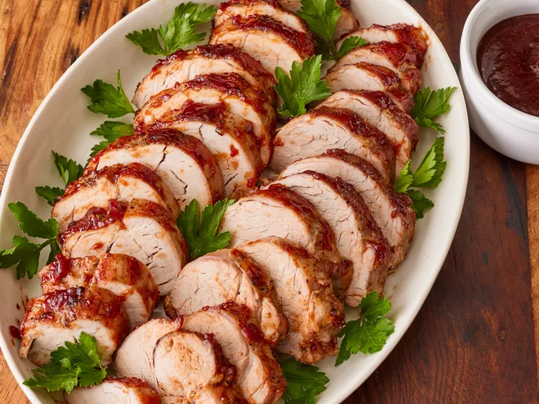

Grilled Pork Tenderloin

Description
This grilled pork tenderloin is cooked over indirect heat and basted with barbecue sauce.
Ingredients
- 2 (1 pound) pork tenderloins
- 1 teaspoon garlic powder
- 1 teaspoon salt
- 1 teaspoon ground black pepper
- 1 cup barbecue sauce, divided
Steps
- Gather all ingredients.
- Preheat an outdoor grill for medium, indirect heat and lightly oil the grate.
- Season tenderloins with garlic powder, salt, and pepper. Place 1/2 of the barbecue sauce into a small bowl for basting; set aside remaining barbecue sauce for serving.
- Cook pork on the preheated grill over indirect heat for 30 minutes.
- Brush pork with barbecue sauce, turn, and brush again, using all sauce in the small bowl. Continue cooking until an instant-read thermometer inserted into the center reads 145 degrees F (63 degrees C), about 15 more minutes. Let pork rest for 10 minutes.
- Slice pork and serve with reserved barbecue sauce.